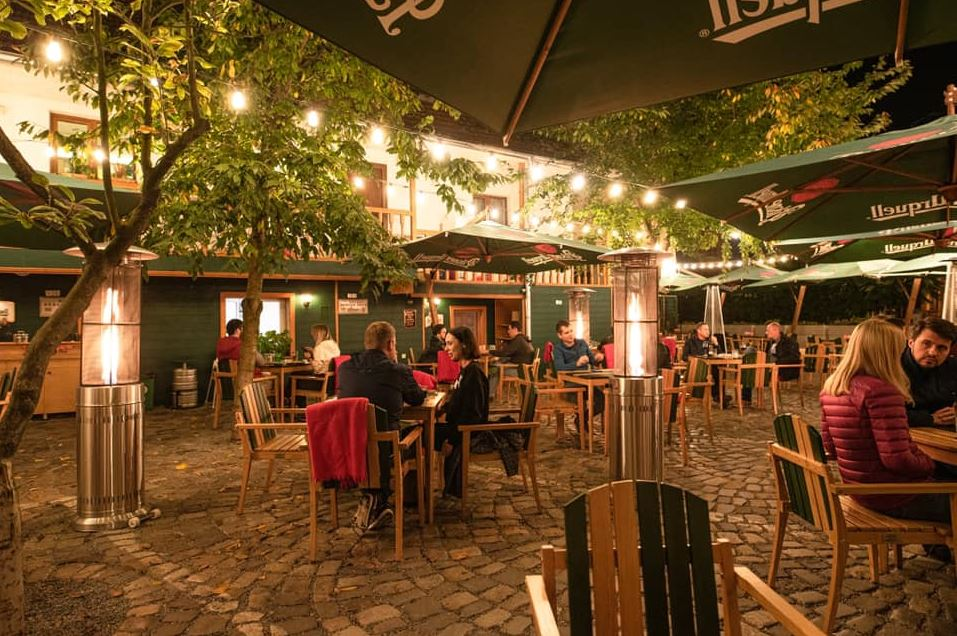

Unul dintre lucrurile care ne entuziasmează cel mai mult cu privire la începerea sezonului cald este faptul că, în sfârșit, putem să ne bucurăm de un prânz bun în aer liber. Unele terase ne atrag cu preparate tradiționale, numai bune de savurat în momentele în care ne e dor de copilărie și de mâncărurile bunicilor. Altele ne atrag prin faptul că se regăsesc într-o atmosferă caldă și plăcută care, pe deasupra, oferă și o ambianță conturată de muzică live. Pe de altă parte, câteva dintre ele ne atrag tocmai prin familiaritatea pe care ne-o inspiră, fiind o opțiune importantă mai ales pentru aceia dintre noi care locuiesc la bloc, și nu la casă. Unde mai pui și faptul că fiecare dintre acestea, indiferent de ambianța pe care simțim să o alegem, au o ofertă de preparate delicioase despre care-ți vei dori să le povestești prietenilor. Iată care sunt cele 5 terase din Cluj recomandate de noi unde să te bucuri de un prânz bun în sezonul cald.
Mugur de Fluier
Prima dată când le-am trecut pragul prietenilor de la Mugur de Fluier a fost în luna decembrie – când am savurat, în restaurantul lor, o explozie de gusturi, arome și emoții, care ne-au teleportat direct la mama acasă. Atunci, ne-am bucurat să descoperim că au, ca parte din oferta lor, conceptul de „meniul zilei”. Când documentăm acest material, meniul zilei (31RON) include: ciorbă de burtă, pulpe dezosate cu orez cu legume și chiflă artizanală cu maia. Pentru că preparatele incluse în meniu se schimbă zilnic, în alte zile poți găsi: borș de pui, cârnați cu fasole bătută și chiflă artizanală. Alternativ, alte preparate de care s-ar putea să ai norocul să te mai bucuri includ: ciorbă acră de perișoare, carne la garniță cu mămăligă și chiflă artizanală. Iar dacă le savurezi pe terasa lor, te vei bucura și de o atmosferă care-ți va insufla o oarecare familiaritate. Atunci când decizi să le faci o vizită, îi vei găsi în apropierea Complexului Studențesc Hașdeu, pe strada Păstorului 1A, în spatele supermarketului Profi.

Jaxx
Dacă le faci o vizită celor de la Jaxx între orele 11:00-16:00 te poți bucura de un „prânz cinstit” la prețul de 39RON. Ca supă, poți alege între: asian soup și Jaxx soup (supă cremă de legume). Ca fel principal, poți opta pentru: fish and chips, buttermilk fried chicken, california burger și chicken parmigiana. Desertul cu care nu poți să dai greș este brownie-ul de 75g. Iar extra, poți adăuga: cornichons, pâine artizanală cu maia, cartofi în coajă extra, coleslaw salad, ou, desertul zilei, crutoane, cheddar, jalapeños, bacon, sos homemade tartare, sos homemade barbeque, muștar a la Cluj (bio), sos Sriracha classic, precum și sos Sriracha mayo. Poți adăuga prânzului tău până la cinci astfel de ingrediente în plus. Opțional, tot pentru prânz, mai recomandăm și Jaxx fajita vegetarian (39RON) – legume trase la tigaie și cu condimente, servite alături de guacamole homemade, smântână, lipie și sos chimichurri. Terasa lor e pregătită de sezonul primăvară-vară și te așteaptă pe strada Emil Isc, la numărul 25.
Livada
Terasa restaurantului Livada este printre cele la care ne întoarcem cu drag la ora prânzului ca să ne reîncărcăm cu energie pentru restul zilei. Dacă vrei să savurezi un meniu de prânz complet ar fi bine să știi că la Livada te poți bucura de acesta de luni până vineri, între orele 12:00-16:00. Ca să-ți faci o idee despre felurile de mâncare pe care le poți savura pe parcursul unei săptămâni de business lunch la ei, menționăm următoarele: luni – supă cremă de mazăre și piure de cartofi cu chifteluțe, marți – ciorbă rădăuțeană și gyros de porc cu cartofi prăjiți, miercuri – supă cremă de ciuperci și tocană de porc, joi – supă de fasole cu ciolan și penne quatro formaggi, vineri – supă de legume și piept de pui la grătar cu orez și legume. Terasa și meniul de prânz marca Livada (care, apropo, se modifică săptămânal) te așteaptă pe strada Clinicilor, la numărul 14.
NATIV
De curând, prietenii de la Restaurant NATIV au început o nouă colaborare cu maestrul chef István Deak în calitate de chef al restaurantului. Alături de el, ei continuă să prepare mese delicioase cu produse achiziționate strict de la producători locali. Desaga cu Legume, Caseus, Torockoi, Karpaten Meat, Carmangeria Mariflor, Carmangeria TOTO, Luna Solai, Dapis Miere și Bunicu’ Nelu sunt câteva dintre brandurile cu care colaborează. Cu ajutorul produselor acestora, echipa NATIV prepară un „Prânz la Nativ” gustos, care poate fi consumat de luni până vineri, între orele 12:00-16:00. Oferta lor include: rasol de vită cu legume coapte și piure cu hribe (54RON), gulaș de vită cu pâine cu maia (33RON), pui în sos de brânză Trapist maturat 3 luni (39RON) și cârnați de casă de vită și porc cu muștar DelaCluj și pâine cu maia (32RON). Înainte să le treci pragul pe una dintre străzile noastre favorite din Cluj, Georges Clemenceau, la numărul 3, nu uita să-ți rezervi o masă online sau la numărul de telefon 0372 911 899.
Cimbru
Atunci când mergem la Cimbru, știm că aici, imaginația și măiestria în bucătărie sunt la ele acasă. La ora prânzului, în intervalul 12:00-17:00, Cimbru te așteaptă cu o ofertă specială. Dacă combini o supă/un snack cu un fel principal sau un fel principal cu un desert, beneficiezi de prețul special de 43RON. Alternativ, dacă preferi să îmbini o porție de supă cu Tagliata sau, mai degrabă, Tagliata cu desert, le poți achiziționa la prețul de 59RON. Supele pe care le servesc includ supa cremă a zilei (16RON) și ciorba zilei (19RON). Ca fel principal, poți consuma, spre exemplu, grilled halloumi sandwich (36RON), Angus steak sandwich (38RON) sau Angus beef Tagliata (49RON). Ca desert, poți alege între ciocolată de casă (17RON) și clătite cu magiun (17RON). Terasa lor o găsești pe strada Decebal, la numărul 37, iar rezervarea o poți face apelând numărul de telefon 0732 043 710.
Pentru momentele din săptămână în care cauți să te retragi într-o ambianță plăcută, cu preparate delicioase, opțiunile sunt numeroase. Când vrei să te retragi într-o ambianță care să-ți amintească de aromele copilăriei, poți alege să savurezi un „meniul zilei” tradițional de la Mugur de Fluier. Când vrei să ieși cu prietenii în mijlocul zilei la o terasă cool, Jaxx te așteaptă, între orele 11:00-16:00, cu un „prânz cinstit”. Livada este locul potrivit pentru momentele în care vrei să savurezi un business lunch (ale cărui rețete se modifică săptămânal). La NATIV poți consuma, de luni până vineri, un prânz special care include preparate precum rasol de vită cu legume coapte și piure cu hribe. Iar #acasălaCimbru găsești o ofertă pentru ora prânzului care-ți permite să îmbini preparate – și să le savurezi la un preț special.
Care este terasa din Cluj înspre care te îndrepți atunci când vrei să te bucuri de un prânz bun în sezonul cald?
Prieten, explorator, cel cu un plan: ClujLife – Te scoate din casă!
De ce facem ceea ce facem?
La început a fost… nimeni și nimic care să ne vorbească despre viața orașului, despre ce se întâmplă în materie de evenimente și localuri pe plan local, niciun motiv care să ne scoată din casă.
Everyday we’re clujlife(ing). Ieșim din casă, vedem ce se întâmplă, ce mai e nou, ce mai zice lumea, ce-ar mai fi interesant de făcut, și apoi îți povestim și ție. Facem asta din Ianuarie 2008. Prezența aceasta îndelungată ne-a adus destule cunoștințe și curaj încât să abordăm subiecte pe care nu le ”atinge” nimeni. Avem informații pe care nu le găsești în altă parte și acces la mulți oameni din varii domenii.